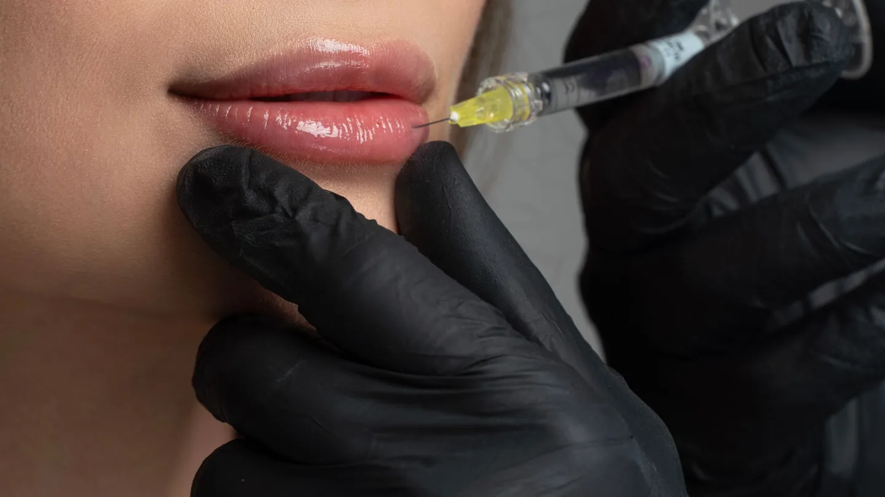

Ästhetische Medizin · Chemnitz
Hyaluron-Filler
in Chemnitz
Natürlicher Volumenaufbau und harmonische Konturen mit Hyaluronsäure – individuell abgestimmt und fachärztlich durchgeführt.
Volumen dort, wo es fehlt
Hyaluronsäure ist ein körpereigener Stoff, der Feuchtigkeit bindet und Volumen schenkt. Mit Fillern gleichen wir Volumenverluste aus, modellieren Konturen und glätten Falten – für ein frisches, natürliches Ergebnis.
Ob Wangen, Lippen, Jawline oder Nasolabialfalten: Wir arbeiten mit Feingefühl und Augenmaß, damit das Ergebnis zu Ihnen passt und natürlich wirkt.
Ein Einblick in die Behandlung

Symbolbild einer vergleichbaren Behandlung.
So läuft es ab
Beratung
Gemeinsam legen wir fest, welche Bereiche behandelt werden und welches Ergebnis Sie sich wünschen.
Behandlung
Die Hyaluronsäure wird mit feiner Nadel oder Kanüle präzise eingebracht.
Modellierung
Das Material wird sanft modelliert, bis Kontur und Volumen harmonisch sitzen.
Ergebnis
Das Resultat ist sofort sichtbar und setzt sich in den Folgetagen weich und natürlich.
Ihre Vorteile bei uns
Hyaluron / Filler – Ihre Fragen
Sieht es natürlich aus?
Ja. Wir dosieren mit Augenmaß und modellieren behutsam, damit Volumen und Konturen harmonisch und natürlich wirken.
Wie lange hält ein Filler?
Je nach Areal und Präparat etwa sechs bis zwölf Monate. Danach lässt sich das Ergebnis auffrischen.
Ist die Behandlung schmerzhaft?
Moderne Filler enthalten ein lokales Betäubungsmittel; auf Wunsch kühlen oder betäuben wir zusätzlich. Die meisten empfinden die Behandlung als gut verträglich.
Gibt es eine Ausfallzeit?
In der Regel nicht. Leichte Rötungen oder Schwellungen klingen meist rasch ab.
Bereit für den ersten Schritt?
Vereinbaren Sie Ihr persönliches Beratungsgespräch – wir beraten Sie individuell und ehrlich.
Leipziger Straße 137, 09113 Chemnitz · Mo – Do 08:00–18:00 · Fr 08:00–14:00
Hinweis: Diese Seite dient der allgemeinen Information und ersetzt keine ärztliche Beratung. Behandlungsergebnisse sind individuell verschieden; ein bestimmtes Ergebnis kann nicht zugesichert werden. Das Video im Kopfbereich wurde mit künstlicher Intelligenz erzeugt, die übrigen Aufnahmen sind Symbolbilder. Sie zeigen weder reale Patientinnen und Patienten noch tatsächliche Aufnahmen aus unserer Praxis.